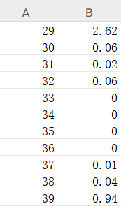
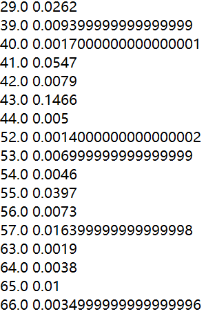
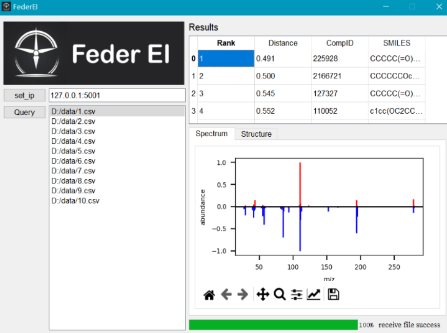

Overview
Installation and Deployment
Deployment of central-server
pull the docker image,It contains the environment and code to run
docker pull kpbl1/federei:v1
Use this command to query the ip address of the current machine for later use Linux use:
ifconfig
Windows use:
ipconfig
Open two tcp ports on the machine for listening,for example 5000 5001.port1 is for client regist,port2 for user send file.
If the firewall on your machine is iptables,use this:
sudo iptables -A INPUT -p tcp --dport port1 -j ACCEPT
sudo iptables -A INPUT -p tcp --dport port2 -j ACCEPT
If the firewall on your machine is firewalld,use this:
sudo firewall-cmd --zone=public --add-port=port1/tcp --permanent
sudo firewall-cmd --zone=public --add-port=port2/tcp --permanent
sudo firewall-cmd --reload
run central-server
docker run -i -p port1:port1 -p port2:port2 federei:v1
python3.8 /app/center.py your_ip_address port1 port2
Deployment of client-server
client server should be run after central,we need the central ip and port information to start it.After client server run it will be added to regist table automatically
pull the docker image,It contains the environment and code to run
docker pull kpbl1/federei:v1
Use this command to query the ip address of the current machine for later use Linux use:
ifconfig
Windows use:
ipconfig
Open two tcp ports on the machine for listening,for example 5000 5001
If the firewall on your machine is iptables,use this:
sudo iptables -A INPUT -p tcp --dport port1 -j ACCEPT
sudo iptables -A INPUT -p tcp --dport port2 -j ACCEPT
If the firewall on your machine is firewalld,use this:
sudo firewall-cmd --zone=public --add-port=port1/tcp --permanent
sudo firewall-cmd --zone=public --add-port=port2/tcp --permanent
sudo firewall-cmd --reload
run client we let the container run in the background and then copy the database into it
docker run -d -p port1:port1 -p port2:port2 federei:v1
Find the id of the container we started
docker ps
Then copy database into it
docker cp your_database_path container_id:/app
attach this container and run server,database_name is the last item of your_database_path
docker attach container_id
python3.8 /app/client.py central_ip center_port1 center_port2 client_ip client_port1 client_port2 database_name
Installation of user-interface
download software in here: https://github.com/wustjie/wustjie.github.io/releases/tag/FederEI
User Guide
Preparation of input file
we now support csv,txt,mgf data type. csv data type as:

txt data type as:

mgf data type: At least contain COMPOUND_NAME attribute
we put some data example on here: https://github.com/wustjie/wustjie.github.io/releases/tag/FederEI
Operation sequence
First set the central ip and port. Second put on query data. Third wait and view the result.
Interpretation of results

click the query data will show the results,then click the result will show the compare of mass spectrum.And in structure will show the result compound struct.
Saving results
Results file will auto save in FederEI.exe filefolder. The result is rename by query time,contain all query data.
Advanced Usage
How to add client-server
Run client server,it will be added to regist table automatically
How to change library
copy your database into container and rerun client server
docker cp your_database_path container_id:/app
docker attach container_id
python3.8 /app/client.py central_ip center_port1 center_port2 client_ip client_port1 client_port2 database_name
Library format
Library data support .pickle and .mgf type. It should at least contain these information: smiles compound_name